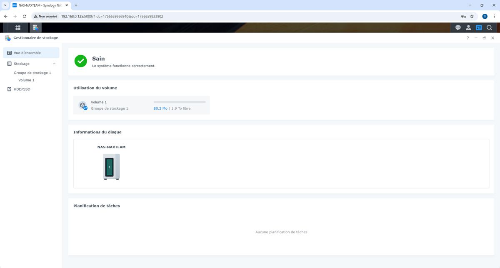
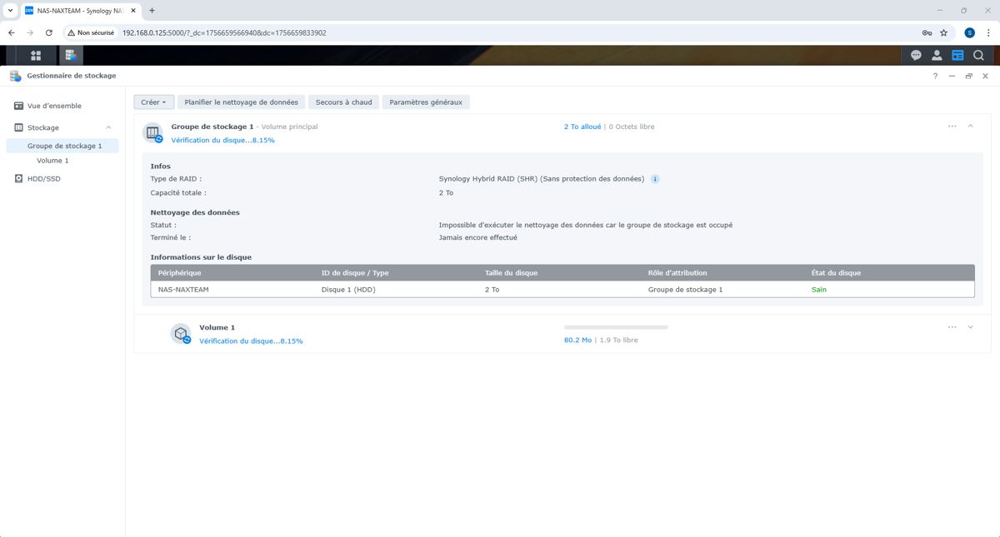

Entreprise · Naxteam Partner
Sauvegarde centralisée avec un NAS Synology
Sécuriser les données de 4 à 5 postes avec une sauvegarde automatique et un accès distant, pour environ 290 € de matériel.
- Synology DSM 7.2
- Synology Drive
- QuickConnect
- Let's Encrypt
Contexte
Les documents sensibles étaient stockés localement, sans plan de sauvegarde : risque de perte par panne, vol ou erreur.
Résultat
Sauvegarde continue des postes, historique jusqu'à 32 versions, accès distant sans ouverture de port, procédure documentée pour réutilisation.
Étapes de réalisation
- Installation. Montage du disque 4 To, initialisation de DSM, compte administrateur, IP réservée.
- Sécurité. Certificat Let's Encrypt, pare-feu DSM, politique de mots de passe, mises à jour automatiques.
- Comptes et partages. Groupe Employés, comptes nominatifs, dossier commun et dossier de sauvegardes.
- Sauvegarde. Synology Drive Server, client sur les postes, sauvegarde du dossier Documents en sens unique.
- Accès distant et tests. QuickConnect, tests de restauration de versions.
Captures


Compétences
- Sauvegarde
- Administration NAS
- Gestion des droits
- Sécurité